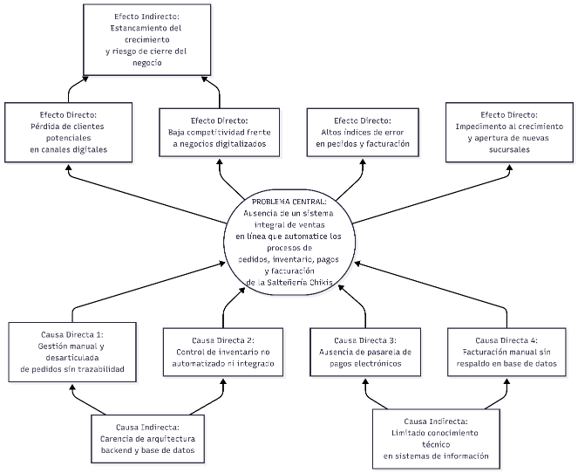
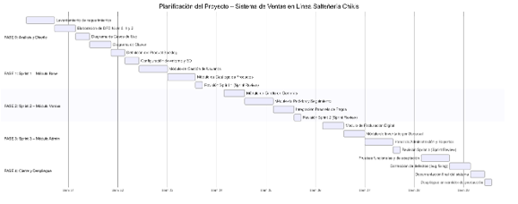

I. Generalidades y Marco Teórico
1 Introducción
El presente documento constituye el informe formal de análisis y diseño del sistema integral de ventas en línea propuesto para la Salteñería Chikis, microempresa gastronómica boliviana dedicada a la elaboración y comercialización de salteñas en la ciudad de La Paz. El estudio se inscribe en el campo de la Ingeniería de Software y aplica los paradigmas del análisis estructurado y del análisis orientado a objetos para modelar, diseñar y planificar el desarrollo de un sistema informático que responda a las necesidades operativas del negocio.
La digitalización de los canales comerciales representa en la actualidad uno de los factores más determinantes para la competitividad de las micro, pequeñas y medianas empresas (mipymes). La Comisión Económica para América Latina y el Caribe (CEPAL, 2022) sostiene que las mipymes que adoptan plataformas de comercio electrónico incrementan su alcance de mercado en un promedio del 35 %, reducen costos operativos en un 18 % y mejoran la satisfacción del cliente de manera significativa. En Bolivia, no obstante, la tasa de adopción de comercio electrónico en el segmento de microempresas gastronómicas se estima inferior al 12 % (Fundación para el Desarrollo Productivo y Financiero [PROFIN], 2023), evidenciando una brecha tecnológica que constituye, simultáneamente, una oportunidad estratégica.
La tasa de adopción de e-commerce en microempresas gastronómicas bolivianas es inferior al 12 %, frente a una media latinoamericana en constante crecimiento. Esta brecha representa el punto de partida del presente proyecto.
La Salteñería Chikis opera en la actualidad con procesos de toma de pedidos, control de inventario y facturación enteramente manuales o semiautomáticos, sin integración tecnológica entre sus sucursales ni con sus clientes en medios digitales. El sistema propuesto busca subsanar estas deficiencias mediante la construcción de una plataforma web de ventas en línea con arquitectura cliente-servidor, base de datos relacional, módulos de gestión de pedidos, inventario, pagos electrónicos y facturación, y una interfaz responsiva accesible desde cualquier dispositivo con conexión a internet.
El documento se organiza en tres capítulos principales: el Capítulo I desarrolla las generalidades del proyecto; el Capítulo II presenta el análisis y diseño estructurado mediante Diagramas de Flujo de Datos (DFD) sincronizados con la metodología SCRUM; y el Capítulo III desarrolla el análisis orientado a objetos mediante el Diagrama de Casos de Uso y el Diagrama de Clases, ambos en notación UML 2.x.
2 Antecedentes
2.1 Antecedentes de la Empresa
2.1.1 Misión y Visión Organizacional
La Salteñería Chikis es una empresa familiar fundada con el propósito de preservar y difundir la tradición culinaria boliviana a través de la producción artesanal de salteñas de alta calidad. Su misión se orienta a ofrecer a sus clientes una experiencia gastronómica auténtica, basada en el uso de ingredientes frescos, recetas tradicionales y un servicio de atención personalizado que refleje los valores de cordialidad y hospitalidad propios de la cultura boliviana.
La visión organizacional apunta a consolidarse como la empresa líder en la comercialización de salteñas en la región metropolitana de La Paz, expandiendo su red de sucursales y su canal de ventas en línea. La adopción de tecnologías de información y comunicación (TIC) es concebida por la dirección del negocio como un habilitador estratégico indispensable para alcanzar dicha visión.
2.1.2 Situación Operativa Actual
La Salteñería Chikis cuenta con tres puntos de venta físicos en zonas de alta afluencia: la sucursal Central (Calle Colón N.° 463), la sucursal Calacoto (Calle 23 N.° 7727) y la sucursal Landaeta (Av. Landaeta N.° 1041). La oferta comercial comprende cinco variedades de salteña —Pizza, Picante, Fricase, Dulce y Mixta— con precio unitario de Bs. 8,00, complementadas con una selección de bebidas.
La gestión operativa se caracteriza por un elevado grado de manualidad. Los pedidos son recibidos presencialmente o mediante mensajería instantánea. El control del inventario diario —número de salteñas producidas, sabores disponibles y stock de bebidas— es realizado por el vendedor en papel o en hojas de cálculo sin integración con el proceso de ventas. La empresa mantiene presencia activa en redes sociales —Facebook, Instagram y TikTok—, aunque esta no está articulada con un sistema de ventas en línea que permita concretar transacciones de forma directa y automatizada.
Se dispone de un prototipo preliminar de interfaz web en HTML5, CSS3 y JavaScript que implementa un catálogo de productos y un carrito con redirección a WhatsApp; sin embargo, carece de backend, base de datos y capacidades transaccionales reales, por lo que no constituye un sistema de información funcional en sentido estricto.
2.2 Antecedentes Tecnológicos
El campo del comercio electrónico ha evolucionado aceleradamente desde los trabajos de Kalakota y Whinston (1997). En las últimas dos décadas, la arquitectura de las plataformas de ventas en línea ha transitado desde modelos monolíticos hacia arquitecturas de microservicios, APIs REST y aplicaciones de una sola página (SPA), siguiendo los principios de los sistemas distribuidos (Tanenbaum y Van Steen, 2017).
Para el modelado de sistemas de esta naturaleza, la ingeniería de software dispone de dos paradigmas complementarios: el análisis estructurado —formalizado por Yourdon y DeMarco (1979) mediante los DFD— y el análisis orientado a objetos —estandarizado por Booch, Rumbaugh y Jacobson (1999) mediante UML—. El presente proyecto adopta ambos paradigmas de forma sinérgica. La metodología de desarrollo seleccionada es SCRUM (Schwaber y Sutherland, 2020), marco ágil de amplia eficacia documentada en proyectos de software para pequeñas empresas (Dingsøyr et al., 2012).
3 Planteamiento del Problema
La gestión comercial de la Salteñería Chikis se sustenta actualmente en procesos manuales y desarticulados que generan ineficiencias operativas de naturaleza sistémica. La identificación de estas ineficiencias constituye el punto de partida del presente proyecto.
- Gestión de pedidos: La empresa carece de un mecanismo centralizado para la recepción, registro y seguimiento de órdenes de compra. Los pedidos se gestionan por canales informales sin trazabilidad, historial de cliente ni integración con el inventario, generando errores, duplicaciones y una experiencia deficiente para el cliente.
- Control de inventario: El vendedor registra diariamente la disponibilidad de productos en papel, sin vinculación con el canal de ventas en línea. Esta desconexión provoca pedidos de productos no disponibles y ausencia de datos históricos para planificar la producción.
- Facturación y cumplimiento fiscal: La empresa emite comprobantes de pago de forma manual, sin integración con un sistema de facturación electrónica conforme a la normativa del Servicio de Impuestos Nacionales (SIN) de Bolivia, exponiendo al negocio a riesgos regulatorios.
- Métodos de pago: La ausencia de integración con pasarelas de pago electrónicas limita las transacciones al efectivo en el punto de venta, excluyendo a consumidores que prefieren modalidades de pago digital.
La confluencia de procesos manuales, desarticulados y sin integración tecnológica compromete la eficiencia operativa, la competitividad y el crecimiento sostenible de la Salteñería Chikis en el mediano y largo plazo.
4 Árbol de Problemas
Con el propósito de determinar con precisión las relaciones de causa y efecto que convergen en la situación problemática, se aplicó la técnica del árbol de problemas bajo los lineamientos metodológicos de la Deutsche Gesellschaft für Internationale Zusammenarbeit (GIZ, 1987). Este análisis permite identificar las causas raíces —directas e indirectas— que originan el problema central, así como las consecuencias sistémicas que este provoca en la gestión operativa y comercial de la empresa.

5 Formulación del Problema
¿De qué manera el diseño e implementación de un sistema integral de ventas en línea, sustentado en los paradigmas del análisis estructurado y orientado a objetos, permitirá a la Salteñería Chikis automatizar y centralizar sus procesos de gestión de pedidos, control de inventario, procesamiento de pagos electrónicos y emisión de comprobantes fiscales, mejorando la eficiencia operativa del negocio y la experiencia de compra del cliente en la ciudad de La Paz?
Problemas secundarios
- ¿Cómo optimizar el control de existencias diarias de salteñas y bebidas para evitar la desarticulación tecnológica y la pérdida de ventas?
- ¿Qué técnicas e instrumentos permitirán identificar y documentar los requerimientos funcionales y no funcionales del sistema?
- ¿Cómo definir el modelo ambiental del sistema para establecer con claridad los límites, entidades externas y flujos de información?
- ¿De qué forma estructurar el modelo de comportamiento para descomponer los procesos globales en subprocesos específicos?
- ¿Qué interacciones funcionales mantienen los actores del dominio con el sistema y cómo estructurar sus relaciones de inclusión y extensión?
- ¿Cómo diseñar la estructura estática del dominio para fundamentar el esquema de la base de datos relacional?
- ¿Bajo qué esquema temporal y fases de Sprints planificar el proyecto conforme a la metodología SCRUM?
6 Propósito del Estudio
6.1 Objetivo General
Diseñar un sistema integral de ventas en línea para la Salteñería Chikis, mediante la aplicación de los paradigmas de análisis estructurado y orientado a objetos, con el fin de modelar una arquitectura de software que automatice los procesos de gestión de pedidos, control de inventario, procesamiento de pagos electrónicos y emisión de comprobantes fiscales, optimizando la eficiencia operativa del negocio y la experiencia del cliente en el canal digital.
6.2 Objetivos Específicos
- Automatizar la gestión de productos, sabores y control de stock en tiempo real dentro del módulo de inventario.
- Identificar y documentar los requerimientos funcionales y no funcionales mediante entrevistas semiestructuradas, observación directa y análisis de procesos.
- Elaborar el modelo ambiental mediante el DFD de Nivel 0, identificando entidades externas, flujos de entrada/salida y los límites del sistema.
- Desarrollar el modelo de comportamiento mediante los DFD de Nivel 1, 2 y 3, descomponiendo los procesos en módulos funcionales con sus flujos de datos internos y externos.
- Construir el modelo de casos de uso, identificando los actores —Cliente, Vendedor, Administrador y Entidad Financiera— y las relaciones de inclusión y extensión entre casos de uso.
- Diseñar el diagrama de clases del sistema, definiendo entidades del dominio, atributos, métodos y relaciones de asociación, composición y herencia que fundamenten el esquema de la base de datos relacional.
- Elaborar la planificación mediante un diagrama de Gantt estructurado por fases y Sprints conforme a la metodología SCRUM.
7 Método, Medios e Instrumentos de Investigación
7.1 Justificación
7.1.1 Justificación Económica
La implementación del sistema representa una inversión con un horizonte claro de retorno económico. Estudios del sector gastronómico en América Latina estiman que las pequeñas empresas que implementan plataformas de venta en línea incrementan sus ingresos entre un 20 % y un 40 % durante los primeros 18 meses de operación digital (OIT, 2022). La automatización de los procesos de facturación y registro de pedidos reducirá adicionalmente los costos asociados a la corrección de errores y la gestión manual de comprobantes.
7.1.2 Justificación Técnica
El proyecto es técnicamente viable por la disponibilidad de tecnologías maduras de código abierto. La arquitectura propuesta —con separación clara entre capas de presentación, lógica de negocio y persistencia— es consistente con las mejores prácticas de la ingeniería de software moderna (Fowler, 2002). La existencia del prototipo preliminar valida la comprensión inicial del dominio por parte del equipo técnico.
7.1.3 Justificación Operativa
El sistema simplificará y formalizará los procesos del negocio, reduciendo la dependencia de registros manuales. La centralización en una base de datos relacional permitirá acceder en tiempo real a reportes de ventas, historial de demanda e inventario por sucursal. El módulo de control de inventario resolverá el problema recurrente de pedidos de productos no disponibles.
7.2 Alcances del Sistema
Los módulos funcionales incluidos en el alcance son:
- Módulo de Gestión de Usuarios: registro, autenticación, recuperación de contraseña y administración de perfiles para Cliente, Vendedor y Administrador.
- Módulo de Catálogo de Productos: gestión completa del inventario con precios, descripciones, imágenes y control de stock en tiempo real.
- Módulo de Carrito y Pedidos: agregar, modificar y eliminar ítems, confirmación de pedido, selección de método de entrega y seguimiento del estado.
- Módulo de Pagos Electrónicos: integración con pasarela de pago nacional que soporte transferencias bancarias y billeteras digitales.
- Módulo de Facturación: emisión de comprobantes fiscales digitales conforme a la normativa del SIN de Bolivia.
- Módulo de Inventario (Vendedor): registro diario de producción y disponibilidad de productos.
- Módulo de Administración y Reportes: paneles de estadísticas de ventas, demanda por producto y gestión de usuarios.
Las exclusiones del alcance incluyen la logística de entrega a domicilio, la integración con sistemas contables externos, el soporte para múltiples monedas, el desarrollo de aplicaciones móviles nativas, los programas de fidelización de clientes y la publicación automática en redes sociales. Geográficamente, el sistema opera en las tres sucursales actuales con arquitectura escalable a nuevas sucursales.
7.3 Metodología de Desarrollo
La metodología seleccionada es SCRUM (Schwaber y Sutherland, 2020). Las metodologías tradicionales como el modelo en cascada resultan inadecuadas para este contexto, donde los requerimientos están sujetos a refinamiento progresivo. SCRUM organiza el desarrollo en Sprints de duración fija al término de los cuales se entrega un incremento funcional evaluable por el cliente.
La adopción de SCRUM descansa en cuatro argumentos: (1) la naturaleza iterativa permite desarrollar los módulos de mayor valor —carrito y pedidos— en los primeros Sprints; (2) la colaboración con el Product Owner garantiza alineación con las necesidades reales del negocio; (3) el tamaño reducido del equipo es óptimo para SCRUM, documentado para equipos de tres a nueve personas; y (4) la incorporación de artefactos UML del Proceso Unificado enriquece la documentación sin imponer rigidez burocrática (Kruchten, 2004).
8 Planificación de Actividades
La planificación se estructura en cinco fases distribuidas en un horizonte de diez semanas calendario. Las fases de análisis y diseño (Sprint 0) preceden al desarrollo iterativo organizado en tres Sprints de dos semanas. La fase de cierre consolida pruebas de aceptación, corrección de defectos y despliegue en producción.
